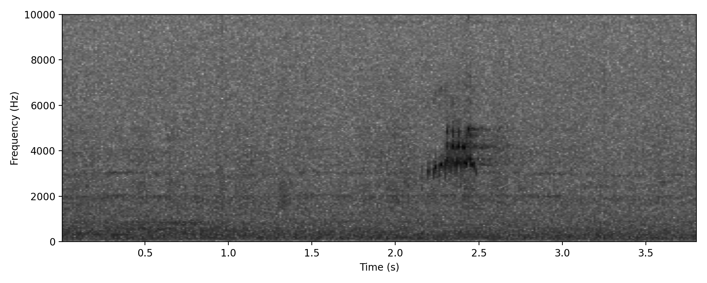
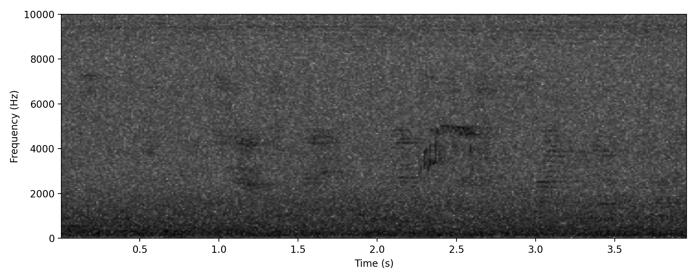
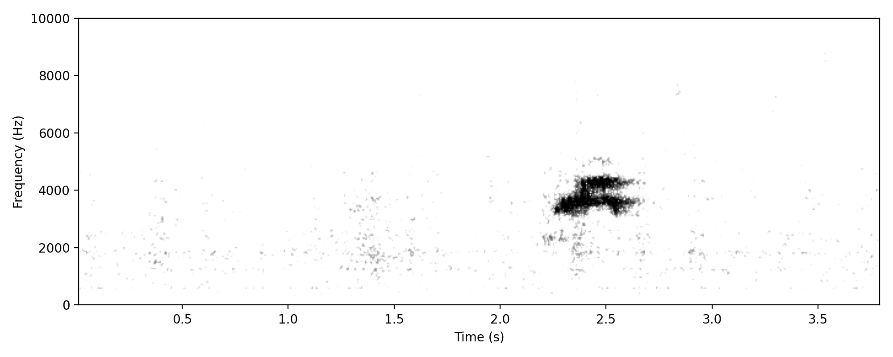
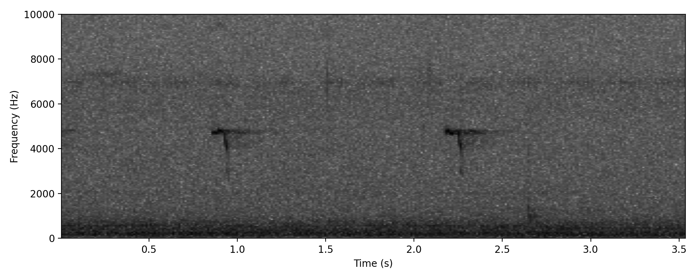

Gallirallus philippensis
The call appears as a compact cluster of several short broadband elements, each beginning as a narrow vertical stroke indicating a very brief, broadband pulse. Immediately following some of these pulses is a short horizontal component at approximately 5 kHz, forming a brief tonal tail after the initial broadband onset.
Most acoustic energy is concentrated between approximately 2.5 and 4.5 kHz, with the strongest intensity around 3–4 kHz, while the thin horizontal component sits slightly higher in frequency near ~5 kHz. Individual elements show little internal frequency sweep, appearing largely vertical, with the horizontal segment representing a brief sustained tone rather than a sweep.
The overall call duration is short, roughly 0.3–0.5 seconds, and consists of several discrete pulses delivered in rapid succession. On the spectrogram this produces the characteristic appearance of a small cluster of vertical strokes, each occasionally followed by a thin horizontal line at higher frequency.
The Buff-banded Rail preenk call appears to be an elongated version of the SQUEAK call described in HANZAB. As birds fly over the microphone, it is usually repeated 4–5 times at intervals of 15–20 seconds. The SQUEAK call is the typical vocalisation heard by birders of this species, and although the preenk call sounds like a Buff-banded Rail to many listeners, it doesn't sound quite right. Indeed the spectrogram differs in several respects to even the best-matching reference calls (see comparison image). Therefore, this nocturnal flight call is regarded as only tentatively identified. Additional evidence is needed to assign it more confidently to species. If this turns out indeed to be Buff-banded Rail, it's worth noting that the typical SQUEAK call is occasionally heard in nocturnal recordings as well.
Project detections: 50 annotations; 10 nights; recorded in March, April; most recent detection 01 Apr 2026.
Typical preenk call given by a bird flying overhead Featured

Typical flight preenk call, perhaps a little distorted by distance

Typical flight preenk call

This is the very short duration call, often heard during the day. Strongly concentrated into 5kHz mark, then dropping quickly to 3.8kHz. Sounds like a very abrupt creak of a metal hinge. This is the SQUEAK call of HANZAB, but seemingly less commonly given by night-flying Buff-banded Rails than the preenk call.
Commonly heard in the daytime, although still need to compare directly with spectrograms and produce a comparison figure.
Confident about the ID, although beware of similar sounds that are surely out there.
Some care needed here to assess fine structure of the call. Other rails, shorebirds
Project detections: 6 annotations; 3 nights; recorded in March; most recent detection 27 Mar 2026.
